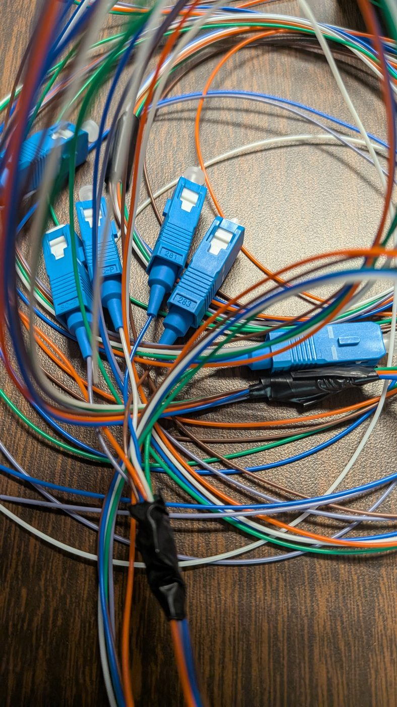
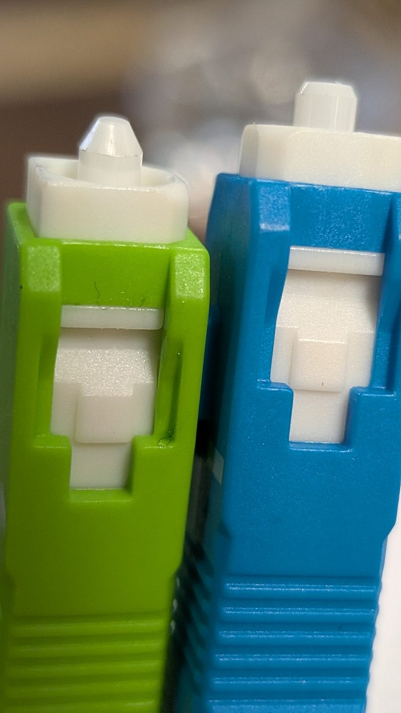
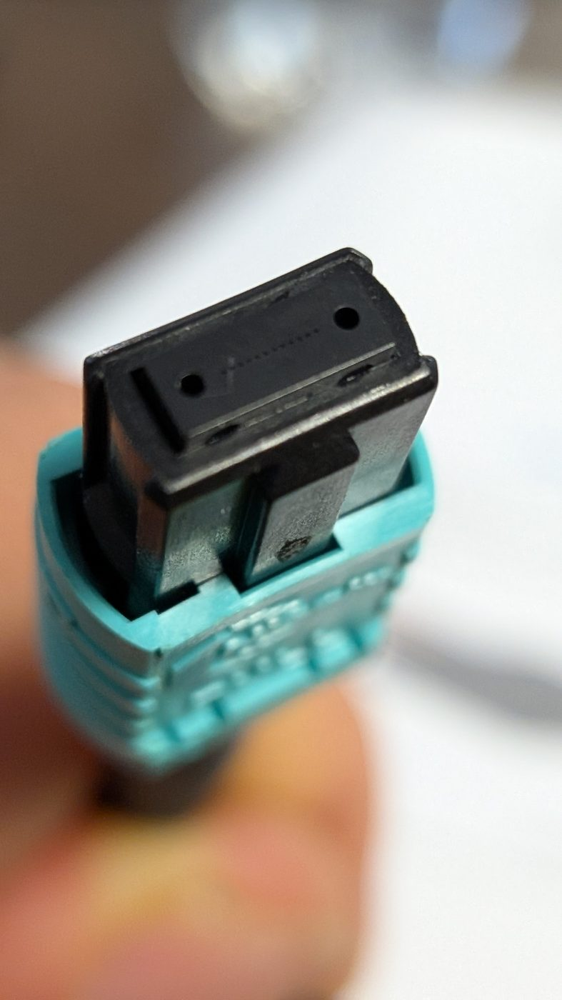

![Per Scholas logo.]()
UCI 2107.1 · Low Voltage Fiber Technician · Module 528 — Fiber Optics Systems
Lesson 528.1 — Fiber Safety, Fundamentals, Standards, and Component Identification
Prepare to identify fiber components, control hazards, use standards correctly, and inspect connector end faces.
Complete this lesson before the related supervised work. The lesson provides the decisions and vocabulary you need at the bench; equipment-specific steps come from the current manufacturer instructions and site procedure.
Estimated completion time: 60–75 minutes, including the formative activities. Your reading and technology needs may change the time required.
How the lesson is organized
- Safe Fiber Work. Control fragments, chemicals, tools, and optical energy.
- Fiber Behavior and Selection. Connect fiber construction and signal behavior to field choices.
- Standards, Cables, and Connectors. Identify the controlling document and compatible component.
- Inspection and Cleaning. Apply the current visual-inspection model and cleaning workflow.
- Wrapping Up. Review the decisions that carry into supervised work.
A note on the standards and the equipment
The exact project specification, licensed current standard, manufacturer instructions, and Safety Data Sheet control the work. Stop and ask when the available document does not match the product or condition.
How this page works
Use the contents list or the Previous and Next buttons. Complete the activity on the visible topic before moving forward. A wrong answer reveals feedback and does not prevent progress.
Working without a mouse, or with a screen reader
Use the skip link to move to the lesson. All controls are keyboard operable, and status changes are announced.
Lesson 528.1 · Section 1 Safe Fiber Work
528.1.1 What fiber optics are and why safety comes first
- Apply fiber tool and test-equipment accountability procedures.
- Apply fiber work-area and hazard controls.
- Explain optical information transmission through fiber.
- Explain attenuation, insertion loss, return loss, and bend-related loss.
- Describe multimode applications and operating wavelengths.
- Explain connector-cleanliness effects on link performance.
- Apply fiber standards to installation and test decisions.
- Identify fiber types, cable constructions, markings, and connector families.
- Apply the approved inspect-clean-inspect procedure.
Fiber carries information as modulated light through very thin strands of glass or plastic.
A transmitter converts an electrical data signal into modulated light. The fiber guides that light to a receiver, which converts it back into an electrical signal. The light may be visible or invisible, depending on the source and wavelength. Fiber systems carry voice, video, network data, and control signals; the glass does not carry electrical current between the endpoints.
| Medium | Advantages | Limitations and selection factors |
|---|---|---|
| Optical fiber | High capacity, long reach, low attenuation, immunity to electromagnetic interference, and no conductive path between equipment | Requires specialized preparation, inspection, cleaning, testing, and careful bend and fragment control. |
| Copper cable | Can carry electrical signals and power; familiar termination and test methods | More susceptible to electromagnetic interference, distance and bandwidth limits, grounding concerns, and electrical hazards. |
| Radio or wireless | Supports mobility and avoids a continuous physical cable path | Uses shared spectrum and is affected by coverage, interference, security, capacity, and environmental conditions. |
The correct medium depends on the application, distance, environment, required capacity, equipment, pathway, and budget. Fiber is not automatically best for every link, but it is often selected when capacity, reach, electrical isolation, or electromagnetic immunity matters.
A cleaved fiber can pierce skin or an eye. A fragment can remain on a mat, tool, sleeve, or piece of clothing and injure someone after the cleaving task ends. Keep food and drinks away from the work area. Control every offcut at the point where you create it, handle fragments with tweezers, and place them in the designated fiber-shard container.
Optical energy may be present even when a fiber looks dark. Never look into a fiber or connector end. Do not use an unfiltered magnifier, direct-view inspection scope, or eye loupe on a fiber that could be energized. Use the site de-energization procedure and approved indirect test equipment.
Do not rub an affected eye or attempt to remove an embedded fragment. Follow the site exposure procedure and obtain medical evaluation for a suspected eye injury or embedded fragment.
Stop when the source state is unknown, a fragment enters an eye, a chemical exposure occurs, a tool guard is damaged, or required protective equipment is unavailable. Secure the area and follow the site escalation procedure.
Check Your Understanding
A technician suspects that a small fiber fragment entered a coworker’s eye. What is the correct response?
Lesson 528.1 · Section 1 Safe Fiber Work
528.1.2 Protective equipment, fragments, and the work area
A controlled bench prevents fragments and chemicals from traveling beyond the task.
Wear safety eyewear that meets the site requirement and provides side protection. Ordinary prescription eyewear is not sufficient unless it is marked and configured as compliant safety eyewear. Acceptable choices may include compliant prescription safety glasses with side shields, over-glasses, or goggles, as specified by the site policy.
Use a dark, smooth work mat that makes fragments visible. Keep the shard container within reach before you strip or cleave fiber. Keep tools in assigned positions, route cords away from cutting areas, and cap open connectors and adapters. Wear task-appropriate gloves when handling sharp armor or chemicals, but do not use gloves where the tool manufacturer prohibits them.
Before work begins, compare the tools, test equipment, consumables, and protective equipment with the task list. Check their condition and record any required calibration or maintenance status. At close-down, account for the same items so damaged or missing equipment is identified before the next task.
Eye protection stays on until offcuts are contained and the work surface is cleared. Exposure can occur during cleanup as well as during cleaving.
Use note: Use the site-approved layout and shard container; the drawing illustrates separation and fragment control.
Text description of this diagram
A plan view separates the work zone, tools, consumables, and shard container. A boundary surrounds the controlled area. Arrows show that fragments stay inside the boundary and go only into the shard container.
Maintain fragment, chemical, tool, and eye-protection controls from setup through cleanup during supervised practice.
Check Your Understanding
When may a technician remove protective eyewear after cleaving fiber?
Lesson 528.1 · Section 1 Safe Fiber Work
528.1.3 Solvents, adhesives, and product controls
The label, Safety Data Sheet, and manufacturer instructions control each chemical product.
Isopropyl alcohol, cleaners, adhesives, primers, and activators vary by formulation. Before use, identify the exact product and read its current Safety Data Sheet (SDS). Follow the manufacturer’s instructions for ventilation, protective equipment, storage, first aid, spill response, and disposal. Those instructions override generic course guidance.
Keep flammable liquids and vapors away from ignition sources. A fusion-splicer arc is an ignition source. Close dispensers when they are not in use, and use only the amount required for the task. Do not place a chemical in an unlabeled container.
For connector cleaning, use the cleaning product and method approved for the connector and equipment. If a wet method is authorized, remove remaining liquid with the specified dry step before inspection or mating. Do not assume that a product is suitable because its label contains the word alcohol.
Check Your Understanding
Which source controls the protective equipment and first-aid requirements for a specific adhesive?
Lesson 528.1 · Section 1 Safe Fiber Work
528.1.4 Optical safety and controlled de-energization
A meter reading supports verification only after the source and possible wavelengths are controlled.
Invisible optical radiation can injure the eye. The same work rule applies across common fiber wavelengths: never view a fiber end directly. Prefer a video inspection probe that presents an electronic image instead of a direct optical path.
Begin by identifying the circuit and every possible source. Disconnect or disable the source where the work plan permits. Prevent another person or automated process from re-energizing it. Then verify the fiber with an approved indirect detector or power meter known to respond to the possible wavelengths and expected power range.
Tell affected personnel when the approved procedure requires a live-fiber or laser-safety announcement. An announcement supports coordination, but it does not replace source control, verification, protective measures, or the stop-work decision.
A single meter reading is not universal proof that any fiber is dark. A meter can miss an unsupported wavelength, an out-of-range condition, an intermittent source, or later re-energization. If the source cannot be controlled or the test equipment cannot cover the possible signal, stop and escalate.
Do not place a direct-view scope or magnifier on an uncontrolled fiber. Follow the equipment manufacturer’s optical-safety instructions and the site procedure.
Place the controlled verification steps in order.
Lesson 528.1 · Section 2 Fiber Behavior and Selection
528.1.5 Fiber construction and dimensions
Each layer protects or guides the glass, and each diameter describes a different part of the assembly.
The core carries most of the guided light. The cladding surrounds the core and has a lower refractive index, which supports guidance within the core. A protective coating is applied to the glass during manufacture. Buffer material and the cable jacket add mechanical and environmental protection but do not guide the signal.
When light reaches the core-cladding boundary at a supported angle, the difference in refractive index keeps the light guided along the core. This behavior is commonly introduced as total internal reflection. Installed bends, damage, and mismatched components can disturb the guided path and increase loss.
Optical Single-mode (OS) and Optical Multimode (OM) designations identify standardized fiber categories. The number following the letters identifies a specific category; it is not a performance ranking.
| Dimension | Meaning | Field use |
|---|---|---|
| 9/125 micrometers | Typical single-mode core and cladding diameters | Match fiber, connectors, splices, and test cords. |
| 50/125 micrometers | Common multimode core and cladding diameters for OM2 through OM5 | Do not mix with 62.5/125 micrometer test paths. |
| 62.5/125 micrometers | OM1 multimode core and cladding diameters | Use compatible 62.5/125 micrometer cords and components. |
| 250 micrometers | Typical coated-fiber diameter | Select the correct stripper and holder setting. |
| 900 micrometers | Common tight-buffered-fiber diameter | Confirm tool and connector-kit compatibility. |
Read the cable legend and product datasheet before selecting tools or components. Color can support identification, but it does not prove fiber type, listing, or performance.
Use note: The circles compare nominal core sizes at one scale; they do not identify a cable or prove compatibility.
Text description of this diagram
Three fiber cross-sections share one scale. They compare nominal 9, 50, and 62.5 micrometer core diameters inside 125 micrometer cladding. A separate line represents the approximate width of a human hair.
Check Your Understanding
Which layer primarily guides the optical signal?
Lesson 528.1 · Section 2 Fiber Behavior and Selection
528.1.6 Single-mode, multimode, and fiber grades
Choose fiber from the required interface, reach, environment, and existing plant—not from jacket color alone.
Single-mode fiber has a small core and supports long reaches and high-capacity applications. Multimode fiber has a larger core and is common in shorter building and data-center links. The active equipment specification determines which fiber types and wavelengths are supported.
Common multimode systems operate near 850 nanometers (nm), and some applications use the 1300 nm region. Common single-mode systems operate near 1310 nm or 1550 nm, with other wavelengths used by specific systems. These are common operating regions—not permission to substitute a source. Match the transmitter, receiver, fiber, test equipment, and test wavelength to the specified interface.
The Optical Single-mode (OS) and Optical Multimode (OM) category must match the interface and complete link. Do not substitute one category for another merely because its number is higher.
| Designation | Nominal core/cladding | Selection point |
|---|---|---|
| OS2 | 9/125 micrometers | Single-mode category; confirm cable construction, wavelength, reach, and environment. |
| OM1 | 62.5/125 micrometers | Legacy multimode; keep the complete link and test path core-size compatible. |
| OM2 | 50/125 micrometers | Multimode; confirm the interface, supported distance, and existing plant. |
| OM3 | 50/125 micrometers | Laser-optimized multimode; verify that every link and test component is compatible. |
| OM4 | 50/125 micrometers | Laser-optimized multimode with higher category bandwidth than OM3; use the interface specification for reach. |
Do not infer performance from connector shape. The same connector family can terminate different fiber types. Read the cable marking, connector identification, transceiver label, and datasheets at both ends.
Do not combine 62.5/125 micrometer OM1 cable with 50/125 micrometer OM3 patch or test cords. Use a compatible fiber type throughout the specified link and acceptance-test path.
Check Your Understanding
A lab link uses 62.5/125 micrometer OM1 cable. Which test cords belong in its acceptance-test path?
Lesson 528.1 · Section 2 Fiber Behavior and Selection
528.1.7 Attenuation, wavelength, dispersion, and bend loss
Loss reduces optical power; dispersion spreads the signal in time.
Attenuation is the reduction in optical power as light travels through fiber and components. Absorption, scattering, connector loss, splice loss, and bending can contribute. Macrobends are visible curves that exceed the permitted bend radius. Microbends are small local distortions caused by pressure, ties, tray routing, or cable damage.
Insertion loss is the decrease in forward optical power caused when a component or link is inserted into the path; it is normally reported as a positive loss in decibels (dB). Return loss compares launched power with the power reflected back toward the source. A higher positive return-loss value means less power is returning toward the source. Do not confuse return loss with insertion loss: one describes reflected power and the other describes forward power lost through the path.
Use the manufacturer’s minimum bend radius and maximum pulling tension. Values such as 20 times the cable diameter during pulling and 10 times after installation are course defaults only when the product datasheet and project specification permit them.
Dispersion spreads an optical pulse. Modal dispersion applies to multimode transmission because different modes can arrive at different times. Chromatic dispersion occurs because a source contains a range of wavelengths that propagate differently. The applicable interface standard and fiber datasheet establish the supported distance.
Legacy single-mode fiber can show increased attenuation near the historical water peak around 1383 nanometers (nm). Modern low-water-peak fiber may be specified for useful performance through that region. Check the fiber designation and manufacturer specification instead of treating 1383 nm as categorically unusable.
Check Your Understanding
A cable develops higher loss after it is tightly secured inside a tray. Which condition should be checked first?
Lesson 528.1 · Section 2 Fiber Behavior and Selection
528.1.8 Decibels, optical power, and a loss budget
Use decibels (dB) for gain or loss and decibels referenced to one milliwatt (dBm) for an absolute optical power level.
A dB value expresses a ratio, including link loss. A dBm value expresses optical power relative to one milliwatt. Do not add a dBm power value to another dBm value. Subtract path loss in dB from transmitted power in dBm to predict received power.
Predicted received power (dBm) = transmit power (dBm) − total path loss (dB).
Lower-limit margin (dB) = predicted received power (dBm) − receiver minimum (dBm).
Overload margin (dB) = receiver maximum (dBm) − predicted received power (dBm).
A link-loss budget is the maximum total loss permitted for a link by the controlling design or acceptance document. The calculation adds the approved allowances for installed fiber, mated connector pairs, splices, and any other included components. A design allowance is the amount reserved in that calculation for a component or condition. It is a planning and acceptance value—not a prediction that every installed component will lose that much light.
A workmanship target is a project or organization goal used to produce consistently good field work. It may be more demanding than the maximum allowance. A connector can meet the maximum link budget and still miss a tighter workmanship target. Keep the two decisions separate: compare the completed link with the approved link-loss budget, and compare individual work with any documented workmanship criteria.
Assume a training link contains 200 meters of fiber, two mated connector pairs, and one splice. The approved exercise allowances are 3.0 dB per kilometer for fiber, 0.50 dB per mated connector pair, and 0.20 dB per splice.
Fiber allowance: 0.200 kilometers × 3.0 dB per kilometer = 0.60 dB
Connector allowance: 2 × 0.50 dB = 1.00 dB
Splice allowance: 1 × 0.20 dB = 0.20 dB
Maximum calculated link loss: 0.60 + 1.00 + 0.20 = 1.80 dB
The 1.80 dB result is the maximum calculated allowance for this example, not the desired loss for every completed link. Actual projects may use different components, methods, allowances, and acceptance limits. Use the values in the approved project documents rather than treating the example values as universal limits.
Power budget is a related but different calculation. Example: a transmitter provides −4.0 dBm and the documented path loss is 2.5 dB. The predicted received power is −6.5 dBm. Compare that value with both the receiver minimum and receiver maximum in the actual transceiver datasheet.
Check Your Understanding
A transmitter provides −3.0 dBm and the documented path loss is 2.0 dB. What is the predicted received power?
Lesson 528.1 · Section 3 Standards, Cables, and Connectors
528.1.9 Standards, specifications, and project requirements
A standard provides a common baseline; the project and product documents determine the applicable installation.
The American National Standards Institute (ANSI) coordinates U.S. voluntary standards. The Telecommunications Industry Association (TIA) publishes telecommunications-cabling standards. The International Electrotechnical Commission (IEC) publishes international electrotechnical standards, and the Institute of Electrical and Electronics Engineers (IEEE) develops standards that include Ethernet interfaces.
Use the exact designation and revision when citing a standard. ANSI/TIA-568.3-E, released in 2022, revised ANSI/TIA-568.3-D. Do not carry a requirement from the D revision into current course content without checking the licensed E text and applicable addenda. A designation identifies a document; the exact edition and applicable project requirement determine what controls the work.
The TIA-455 series contains Fiber Optic Test Procedures (FOTPs). TIA-455-171, also called FOTP-171, covers attenuation measurement for short cable assemblies. TIA-455-107, also called FOTP-107, addresses return-loss measurement. Use the licensed approved edition and the method named by the controlling document.
| Document | Primary role | Technician action |
|---|---|---|
| ANSI/TIA-568.3-E | Optical-fiber cabling components and related requirements | Use the licensed current text for revision-specific claims. |
| ANSI/TIA-526-14-C | Installed multimode attenuation measurement | Follow the approved reference method, interfaces, and launch conditions. |
| ANSI/TIA-526-7-A or approved successor | Installed single-mode attenuation measurement | Confirm the institution-approved edition before use. |
| TIA-455-171 and TIA-455-107 | Cable-assembly attenuation and return-loss procedures | Use the procedure cited by the approved requirement. |
| IEC 61300-3-35:2022 | Visual inspection of connector and transceiver-stub end faces | Apply the current contamination and defect model. |
| IEEE 802.3-2022 and applicable amendments | Ethernet physical-layer interfaces | Use the exact interface specification for fiber, wavelength, reach, and power. |
| Project specification and manufacturer documents | Job-specific materials, limits, and procedures | Apply the controlling requirement and document the source. |
A local procedure or project choice is not automatically a standards requirement. Identify the controlling source for each limit and record the exact approved edition.
Check Your Understanding
A project specification references a fiber-cabling limit, but the technician cannot confirm the cited standard or edition. What should the technician do before applying the limit?
Lesson 528.1 · Section 3 Standards, Cables, and Connectors
528.1.10 Cable construction and installation listings
Construction, environmental suitability, and code listing answer different questions.
Tight-buffered cable protects individual fibers with a thicker buffer and is common in premises applications. Loose-tube cable places fibers in tubes that allow movement and can support outdoor designs. Distribution cable groups fibers under one jacket. Breakout cable adds subunits around individual fibers. Ribbon cable arranges fibers in a flat matrix for mass handling. Inside Plant (ISP) cable is selected for building environments; Outside Plant (OSP) cable is selected for conditions outside buildings. Some routes require an approved transition between OSP and ISP cable.
Read the complete cable marking. Determine fiber count and type, listing, manufacturer, and product designation. Then confirm the datasheet for the installation environment. Jacket color is only an identification clue.

Armor provides mechanical protection but does not by itself establish suitability for direct burial, wet locations, risers, or plenums. Verify the complete listing and manufacturer marking. Bond and ground metallic members when required by the applicable code and design.
Do not select a cable for a pathway from one feature such as armor or jacket color. Confirm the environment, pathway, fire-rating requirement, water exposure, mechanical risk, and transition rules.
Use note: These are representative constructions; use the actual cable datasheet for materials and environmental suitability.
Text description of this diagram
Two representative cable cross-sections appear side by side. The tight-buffered example protects each fiber individually. The loose-tube example groups coated fibers in a tube. Labels identify strength and jacket features.
Check Your Understanding
Which fact proves that an armored cable is suitable for direct burial?
Lesson 528.1 · Section 3 Standards, Cables, and Connectors
528.1.11 Fiber counts, color sequence, and cable opening
Confirm the cable construction before opening it, then preserve identification and bend control.
The common 12-position sequence is blue, orange, green, brown, slate, white, red, black, yellow, violet, rose, and aqua. Counts above 12 use tube, group, ribbon, or stripe identifiers defined by the cable design. Confirm the manufacturer’s scheme before assigning fiber numbers.
Prepare the workspace and identify the planned opening length. Inspect the jacket and locate ripcords, armor, strength members, tubes, and subunits. Use the tool and depth setting approved for the cable. Score or ring the jacket without cutting into buffers or tubes. Remove the jacket in a controlled direction and inspect the exposed components for damage.
Maintain the minimum bend radius and required slack. Preserve labels or transfer the identification before removing marked jacket material. If a fiber, tube, or subunit is nicked or the construction does not match the plan, stop and evaluate the affected cable.
Use note: Use the cable manufacturer’s identification scheme for the actual product, especially when counts exceed 12.
Text description of this diagram
Two rows of six color swatches show positions 1 through 12. The sequence is blue, orange, green, brown, slate, white, red, black, yellow, violet, rose, and aqua.
Check Your Understanding
After opening a cable, a technician finds a nick in an internal buffer tube. What should happen next?
Lesson 528.1 · Section 3 Standards, Cables, and Connectors
528.1.12 Connector families, end-face geometry, and polarity
Connector shape, fiber type, polish, and polarity must all be compatible.
Subscriber Connector (SC) connectors use a push-pull body and a 2.5 millimeter (mm) ferrule. Straight Tip (ST) connectors use a bayonet coupling and a 2.5 mm ferrule. Lucent Connector (LC) connectors use a small latch body and a 1.25 mm ferrule. Multi-fiber Push On (MPO) connectors hold multiple fibers in a rectangular ferrule and may be pinned or unpinned.
SC connectors are common on premises patch panels and equipment. ST connectors remain in some legacy premises, industrial, and training systems. LC connectors support high-density panels and many transceiver interfaces. MPO connectors support multifiber trunks and parallel-optics applications. These are common uses, not compatibility rules; verify the specified interface at both ends.



Ultra Physical Contact (UPC) and Angled Physical Contact (APC) describe polished physical-contact end-face geometries. In both designs, spring force brings the ferrule end faces into physical contact to reduce the air gap and reflection at the connection. A UPC end face uses a polished, slightly convex, non-angled contact surface. An APC end face adds an angled contact geometry, commonly about 8 degrees, that directs reflected light away from the transmitting core.
Lower back-reflection can be important in systems that are sensitive to reflected optical energy. The actual insertion-loss and return-loss performance depends on the specified connector, manufacturing quality, cleanliness, mating adapter, and complete system. APC connectors are commonly identified by green bodies, while UPC connectors are commonly blue, but color is only an identification aid. Confirm the product marking and documentation.
The end-face geometries do not align correctly. Mating them creates high insertion loss and poor return-loss performance, and repeated mating can damage the end faces.
Use note: The drawing is conceptual. Verify the connector specification and never use body color alone to establish polish type.
Text description of this diagram
Two panels compare Ultra Physical Contact and Angled Physical Contact end faces. The Ultra Physical Contact face meets on a non-angled convex surface. The Angled Physical Contact face uses an angled geometry that directs reflected light away from the transmitting core. A final comparison shows why the two geometries must not be mated.
Simplex uses one fiber position. Duplex pairs two positions, normally for transmit and receive. MPO polarity depends on the complete system method, including trunks, adapters, cassettes, keys, and pinned or unpinned interfaces. “MPO polarity Method A, B, or C” is unrelated to historical Optical Loss Test Set (OLTS) reference-method lettering.
| Check | Question |
|---|---|
| Family | Do the coupling mechanism and adapter match? |
| Ferrule and fiber | Are the connector and fiber types compatible? |
| End-face geometry | Are both sides UPC or both sides APC as required? |
| Polarity | Will transmit connect to receive through the complete path? |
| Condition | Are both end faces controlled, inspected, and ready to mate? |
Check Your Understanding
Which pairing requires the technician to stop because the end-face geometries are incompatible?
Lesson 528.1 · Section 3 Standards, Cables, and Connectors
528.1.13 Field identification sequence
Read markings and physical features before deciding what a component is.
Begin with the cable jacket legend. Record the manufacturer, product designation, fiber count, fiber type, and listing. Examine the exposed construction to confirm tight-buffered, loose-tube, distribution, breakout, ribbon, armor, and strength-member features.
For a connector, identify the coupling mechanism, ferrule size, simplex or duplex body, end-face geometry, and polarity features. For MPO, identify key orientation and pinned or unpinned status. Inspect the associated adapter, cassette, or panel rather than judging the plug alone.
For a transceiver, read the complete label or datasheet. Form factor does not uniquely identify Ethernet type, wavelength, reach, lane count, connector, or fiber type. Two modules can share the same physical shape and support different links.
Record uncertainty. If a marking is missing or contradictory, do not convert an assumption into documentation.
Check Your Understanding
A cable marking is missing or contradicts the observed construction. What should the technician record?
Lesson 528.1 · Section 4 Inspection and Cleaning
528.1.14 Contamination and International Electrotechnical Commission (IEC) 61300-3-35:2022 inspection
Inspection controls contamination and classifies visible features; optical tests establish performance.
Contamination can transfer between mating end faces, increase insertion loss or reflectance, and reduce return loss. Inspect both sides of a connection before mating. Keep verified interfaces capped or mate them promptly.
Use note: The drawing explains why both sides of a connection must be controlled; it is not an inspection acceptance image.
Text description of this diagram
Three panels show possible contamination transfer. One connector begins with a particle. Mating traps the particle between the end faces. After separation, debris or surface damage may appear on both faces, and debris may also remain in the adapter path.
IEC 61300-3-35:2022 applies quantitative defect and scratch criteria to Zones A and B. It removed inspection requirements for Zones C and D. The whole physical-contact area must still be inspected for removable contamination—up to a 250 micrometer diameter area for cylindrical ferrules and the whole ferrule surface for rectangular ferrules.
Visual inspection is additional to optical qualification. It does not replace attenuation, return-loss, or other required performance measurements. Under the 2022 edition, a connector is not rejected solely because it fails visual inspection; meeting the specified optical performance determines whether it can be used after removable contamination has been addressed.
Use the licensed current standard for the exact Zone A and Zone B dimensions and acceptance tables applicable to the connector type. Do not recreate a copyrighted criteria table from memory.
Check Your Understanding
What is the correct relationship between visual inspection and optical qualification?
Lesson 528.1 · Section 4 Inspection and Cleaning
528.1.15 Inspect, clean, inspect, and close
Control the source, inspect the correct interface, clean with an approved method, and verify again.
Confirm the fiber is under the controlled optical-safety condition before using inspection equipment. Select the correct video-probe tip and verify that the scope and tip are clean. An incorrect or contaminated probe can produce a false image or transfer contamination.
Prefer a video probe because it does not create a direct optical path to the eye. Use a handheld direct-view microscope only on a verified de-energized fiber and only when the site procedure and microscope instructions authorize it.
Classify the end face as clean, contaminated, scratched, cracked, or otherwise damaged under the approved criteria. If removable contamination is present, use the approved dry method, such as the specified stick cleaner or dry wipe. Use a wet-then-dry method with the approved solvent only when the product and procedure authorize it. Never leave cleaning fluid on the end face. Inspect again after each cleaning cycle.
After removing contamination, apply the required optical qualification and the approved disposition. A visible scratch or defect does not by itself determine whether the connector may be used under the 2022 inspection model. If contamination remains after the procedure’s allowed attempts, change the cleaning material or method and evaluate the tool. If the feature is damage rather than contamination, stop cleaning and follow the optical-test and disposition requirements.
Adapters and equipment ports are part of the connection. Use the approved probe and cleaning method for those interfaces. Never insert an incompatible cleaning tool into a port.
Use note: The approved inspection criteria, cleaning product, allowed attempts, and repair disposition control the actual task.
Text description of this diagram
A decision flow begins after the optical-safety condition is controlled. Inspect the interface using the approved criteria. If contamination is present, clean it with the approved method and inspect again. If damage is present or cleaning does not resolve the condition, apply the required optical qualification and approved disposition.
During supervised practice, use the equipment-specific manufacturer procedure and the instructor’s directions for the available tools and cleaning products.
Place the inspection and cleaning workflow in order.
Lesson 528.1 · Section 5 Wrapping Up
528.1.16 What you covered
Use these decisions before you begin supervised fiber work.
- Control glass fragments, chemicals, tools, and possible optical energy.
- Use the site procedure, current Safety Data Sheet, and manufacturer instructions.
- Match fiber, cords, connectors, and equipment by specification—not by appearance alone.
- Distinguish relative optical loss from absolute optical power and document the acceptance source.
- Cite the exact standards revision used for a requirement.
- Inspect and clean end faces under the current connector-inspection model, then perform required optical qualification.
These online checks measure recall and application of the material on this page. They do not establish hands-on competence or authorize unsupervised fiber work. Practical readiness is determined through supervised practice and approved assessments.